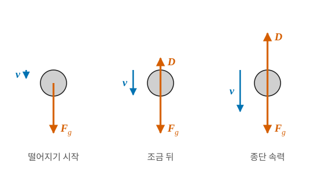

← 목차
항력과 종단 속력 (drag force and terminal speed)
공기 속을 움직이는 물체는 상대 운동을 막는 방향으로
항력 (drag force)
를 받는다. 크기는
(6.2.1)이고
는 실험으로 정하는 항력 계수다.
(6.2.3)
떨어지는 동안
(6.2.2)이고 속력이 커질수록
가 커져 가속도가 줄어든다.
가
와 같아지면 더 빨라지지 않고 일정한
종단 속력 (terminal speed)
로 떨어진다.
